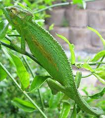
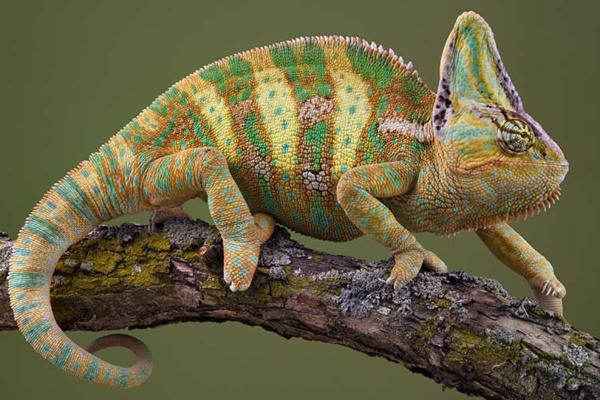
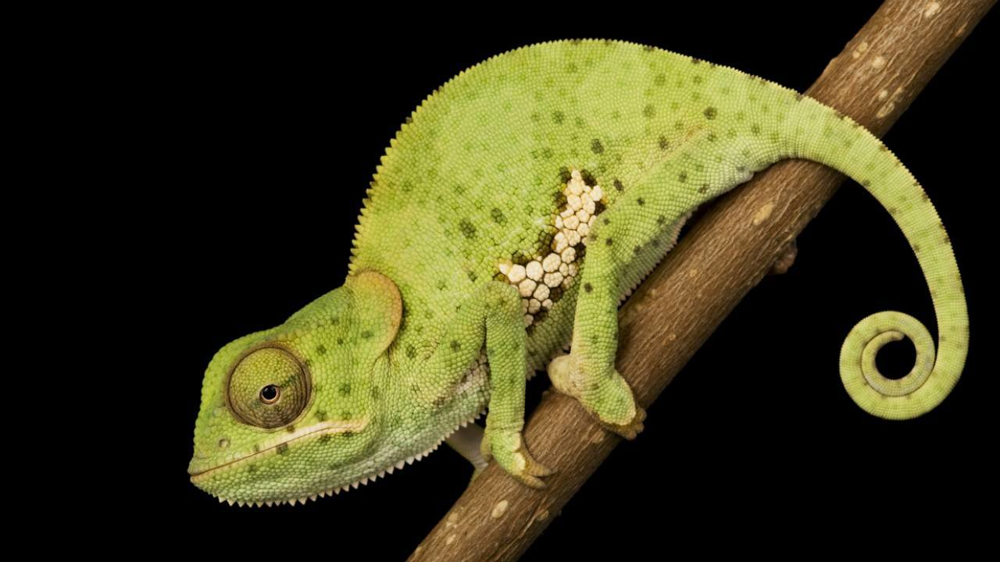

¡Bienvenido!
 
No hay un reptil que cree más fascinación que el camaleón. Parece un ser maravilloso similar a los dragones de un pasado lejano. De hecho, colonizaron la tierra hace 60-100 millones de años. Su habilidad para llamar la atención y casi desaparecer de su hábitat mediante el camuflaje hace que sean algo muy especial en cada terrario. Aprende más sobre estos transformistas únicos y su exigente tenencia.

Los camaleones son pequeños reptiles saurópsidos escamosos (Squamata) y pertenecen al grupo de los animales vertebrados. A su vez, son un grupo de lagartos (Sauria). Aquí los reptiles forman su propia familia como Chamaeleonidae.
El grupo más grande de camaleones vive en los árboles y los arbustos y se le denomina camaleones típicos. El camaleón típico más grande es el Furcifer oustaleti, que puede llegar a medir hasta 80 centímetros de largo. Solo existen unas 40 especies de camaleones enanos. Estos viven en el suelo y como máximo llegan a medir 16 centímetros. El Brookesia micra mide, como mucho, 29 milímetros de largo y es el reptil más pequeño del mundo.
Enlaces de referencia
Ciclo de reproduccion de los camaleones haz click aqui
Informacion General de los camaleons haga click aqui
Dieta promedio del camaleon orientado como mascota haz click aqui